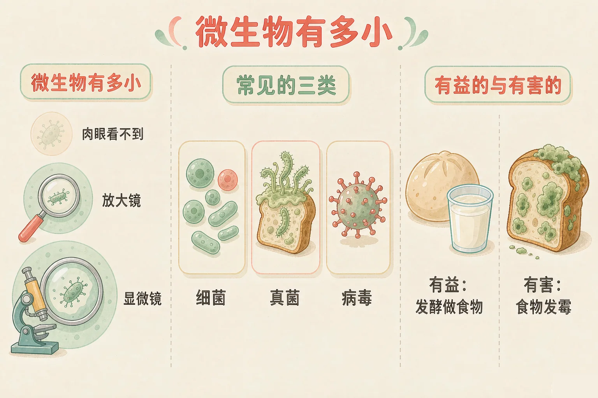
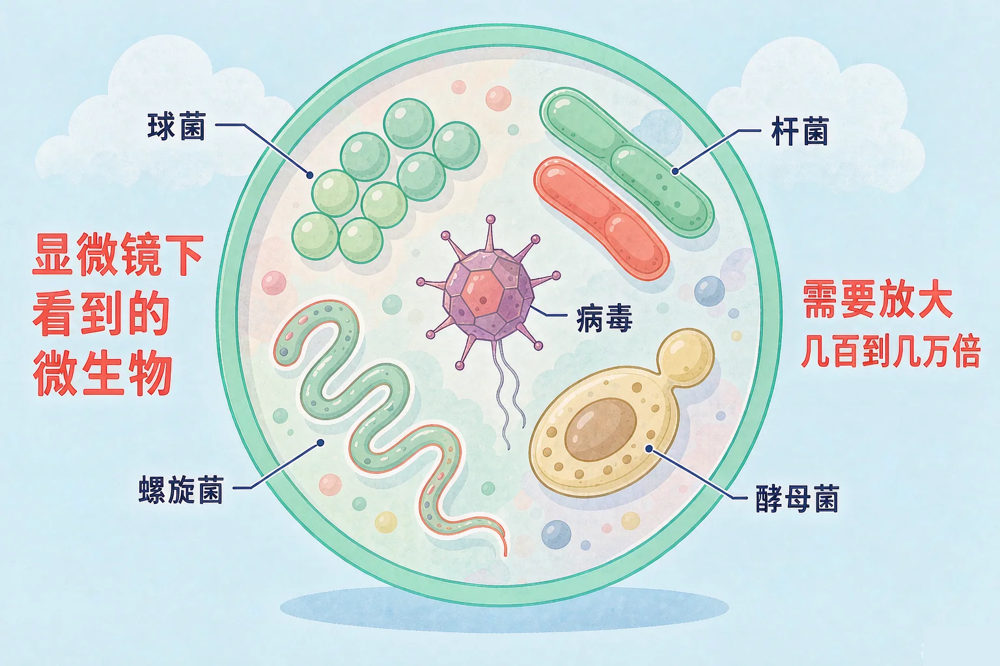
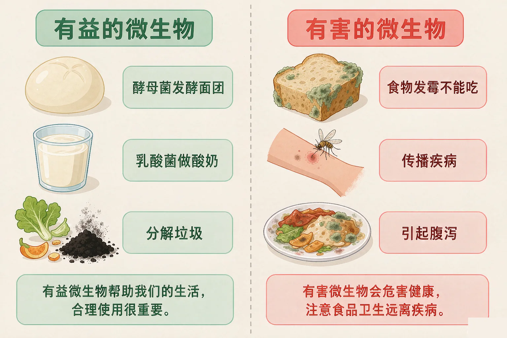

小学五年级 · 生命科学 · 生物多样性
它们小到看不见，却住在你的手上、空气里和馒头上——它们是谁？

选一个你真正好奇的问题，后面的观察和分类都会围着它转。
选择或输入后，这节课会围绕你的问题展开。
先凭直觉选一个，选完立刻看到解释——错了也没关系，正好知道要重点听哪里。
1. 想看清一个细菌的模样，最合适的工具是：
细菌太小了，放大镜也看不清，要用显微镜。错因提醒：把放大镜和显微镜搞混是这一课最常见的错误——放大镜只能看到霉菌菌丝这个级别。
2. 下面哪一组全都是微生物？
细菌、真菌、病毒是常见的三类微生物。错因提醒：常见错误是把昆虫当成微生物，因为昆虫也很小——但用眼睛就能看见的，不是微生物。
3. 馒头蒸熟后变得又软又大，主要靠的是：
发面靠的是酵母菌，它是真菌，属于微生物。这一题先记在心里，等下我们还会讲一遍。
你已经知道生活中有花草树木、有猫狗昆虫，它们都能用眼睛看见。但还有一整群生物，小到肉眼根本看不见，它们就是微生物。
特点一：小
一滴水里可以住着几百万个细菌，要用显微镜放大几百倍才看得清。
特点二：多
土壤、水、空气、皮肤上都有它们，几乎无处不在。

🔍 深层理解 换个角度再看一遍这件事，看看能不能说出背后的原理。
解释它：为什么看不见？因为它们的个体只有几微米，比我们的头发丝还细得多，光线照上去也分辨不出来。
比较它：霉菌长在馒头上的绿毛，肉眼刚好能看到一点，那是很多菌丝聚在一起；单个细菌比它小上千倍。
迁移它：所以医院做检查、厨房检验食物，都要采样送到显微镜下看——看不见的东西，要靠工具把它放大。
拖动下面的滑块，从肉眼换到放大镜，再换到显微镜，看看画面里的微生物有什么变化。
说到微生物，很多同学第一反应是"脏"和"生病"。但我们每天吃的馒头、酸奶，都离不开它们。
👍 帮我们的
酵母菌发面、乳酸菌做酸奶和泡菜、土壤里的细菌分解落叶和垃圾，还能净化污水。
⚠️ 添麻烦的
霉菌让食物发霉变质，致病的大肠杆菌和感冒病毒会让人生病。

不能误认为细菌全都是坏的。我们的肠道里就住着大量帮我们消化食物的细菌；也不能误认为食物只要放进冰箱就永远安全——低温只是让微生物长得慢，不是把它们全部消灭。
先点一张卡片，再点你认为正确的筐。每放一次都会立刻告诉你理由。
点一张卡片开始分类。
题目：妈妈和面时往面粉里加了一小包酵母。几个小时后，面团鼓成了两倍大，蒸出来的馒头又软又香。这是谁在帮忙？请说明理由。
先凭直觉选一个，选完立刻看到解释——错了也没关系，正好知道要重点听哪里。
1. 下面哪个说法是正确的？
酵母菌、乳酸菌帮我们做食物，霉菌、致病菌让人生病。错因提醒：最常见错误是误认为微生物都是坏的，其实是把看不见和有害这两件事搞混了。
2. 食物放进冰箱不容易坏，主要是因为：
低温只是减慢微生物的繁殖速度，并没有把它们全部消灭。错因提醒：误认为冰箱能杀菌是高频错误，所以冰箱里的食物放久了照样会坏。
3. 关于细菌，下面哪句话最准确？
细菌的种类很多，作用也不一样。错因提醒：把细菌和霉菌搞混、以为细菌肉眼能看见，也是常见的错误——它们都要用显微镜才能看清。
下面五件事，哪些真的离不开微生物？点一点，选出来，再写出你的比较理由。
先把你认为"离不开微生物"的事情都点出来。
比一比，再写下来：
同样放在桌上，酸奶为什么能喝，长了绿毛的面包为什么不能吃？请用"微生物、有益、有害"这三个词说清楚。
先凭直觉选一个，选完立刻看到解释——错了也没关系，正好知道要重点听哪里。
1. 饭前要用肥皂认真洗手，主要原因是：
病原微生物个体微小、肉眼看不见，洗手能把它们随水流冲走，是最简单的防病办法。
2. 做酸奶需要往牛奶里加入：
乳酸菌在牛奶里生长，把牛奶变成酸奶，这是有益微生物的典型用途。
3. 小明的妈妈说，打了疫苗就不容易得某些传染病。疫苗起作用时用到的道理是：
疫苗帮身体提前做好防备，而不是消灭身体里所有微生物——我们身体里本来就住着许多有益的微生物。
回到开头那块馒头：发面时，酵母菌是我们请来的帮手；放久了长出的绿毛，是霉菌这个不请自来的客人。同样是小到看不见的居民，做的事情却完全不同——所以要看是哪一种，还要看它在做什么。
讲给同桌听：请用"微生物、显微镜、有益、有害"这四个词，说说为什么我们既怕细菌，又离不开细菌。
三层练习，做完第一、二层就算通关；第三层留给愿意继续探索的同学。
⭐ 基础巩固（必做）
⭐⭐ 能力应用（必做）
⭐⭐⭐ 迁移挑战（选做）
左边是学它之前要先会的，右边是学会之后可以继续探索的，下面是同一领域的伙伴知识。